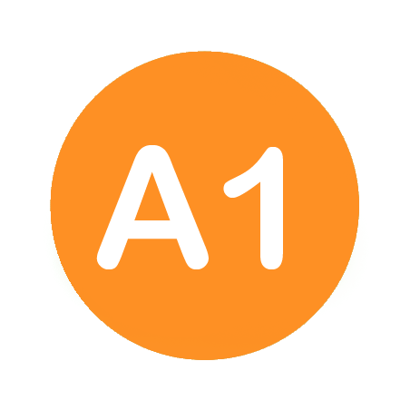
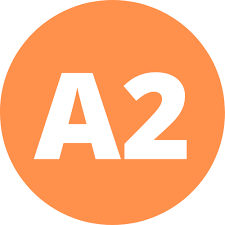
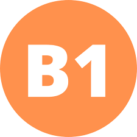

Ingles básico A1
1. Pronouns (Los pronombres)
Pronouns are words that are used in place of a noun or name to avoid repeating the same word. Pronouns can be personal, demonstrative, possessive, relative, interrogative, or indefinite.
Personal Pronouns (Los pronombres personales)
Personal pronouns are used to refer to specific people or things. In English, personal pronouns include words like "I," "you," "he," "she," "it," "we," "you," and "they."
Demonstrative Pronouns (Los pronombres demostrativos)
Demonstrative pronouns are used to point out or indicate which thing or person the speaker is referring to. In English, demonstrative pronouns include "this," "that," "these," and "those."
Possessives (Los posesivos)
Possessives are pronouns that indicate ownership or possession. In English, possessive pronouns include words like "my," "your," "his," "her," "its," "our," "your," and "their."
Ingles A2
4. Nouns (Los nombres)
Nouns are words that represent people, places, things, or ideas. In English, nouns can be countable or uncountable.
Countable and Uncountable Nouns (Los nombres contables e incontables)
Countable nouns are things that can be counted, like "book" or "table." Uncountable nouns, on the other hand, are things that cannot be counted individually, like "water" or "rice."
There Be (Haber)
"There be" is a structure used to indicate the existence or presence of something. It is often used to describe what is in a specific location or situation.
Quantifiers (Los cuantificadores)
Quantifiers are words or phrases used to indicate the amount or quantity of something. Examples include "some," "many," "few," "much," and "a lot of."
5. Adjectives (Los adjetivos)
Adjectives are words used to describe or modify nouns or pronouns. They provide more information about the noun, such as its size, color, or condition.
8. Learn all tenses in English
This refers to mastering the different verb tenses in English, including past, present, and future forms, as well as continuous, perfect, and perfect continuous aspects.
Past and Present Continuous
The past continuous tense is used to describe actions or events that were ongoing in the past. The present continuous tense is used to describe actions or events that are happening now or around the current time.
Cardinal Numbers and Ordinal Numbers
Cardinal numbers are used to count or quantify things, while ordinal numbers are used to indicate position or order in a sequence.
The Hour
Refers to telling time or indicating specific hours on the clock. It involves understanding how to express time using hours, minutes, and AM/PM.
Ingles B1
1. Conjunctions (Las conjunciones)
Conjunctions are words used to connect clauses, phrases, or words together in a sentence. They help to indicate the relationship between different parts of the sentence, such as addition, contrast, or cause and effect.
2. Comparatives and Superlatives (Los comparativos y superlativos)
Comparatives and superlatives are forms used to compare two or more things in terms of their qualities or characteristics. Comparatives are used to compare two things, while superlatives are used to compare three or more things.
3. Adjectives Ending in "-ed" and "-ing" (Los adjetivos terminando en "-ed" y "-ing")
Adjectives ending in "-ed" describe how someone feels, while adjectives ending in "-ing" describe something that causes the feeling. For example, "bored" (feeling) vs. "boring" (causing the feeling).
4. The Gerund and Infinitive (El gerundio y infinitivo)
The gerund is a form of a verb that functions as a noun and ends in "-ing." It is used after certain verbs or as the subject or object of a sentence. The infinitive is the base form of a verb preceded by "to" and is used after certain verbs, adjectives, or nouns.
5. Intensifiers and Mitigators (Los intensificadores y mitigadores)
Intensifiers are words or phrases that strengthen the meaning of other words, while mitigators weaken the meaning. They are used to modify adjectives or adverbs to express emphasis or downplay.
6. Comparative Adverbs (Los adverbios comparativos)
Comparative adverbs are used to compare the intensity or degree of an action or state between two or more things. They often end in "-er" or use "more" to form the comparative degree.
How, like, As (Como)
"How," "like," and "as" are used to make comparisons or to introduce examples or explanations. "How" is used to ask about the manner or way something is done. "Like" and "as" are used to compare things that are similar.
7. What vs. Which (¿Cuál?/¿Qué?)
"What" and "which" are both question words used to ask about specific information. "What" is used when there are many possible options, while "which" is used when there are a limited number of options.
8. learn all tenses in english
This refers to mastering the different verb tenses in English, including past, present, and future forms, as well as continuous, perfect, and perfect continuous aspects.
Past and Present Continuous
The past continuous tense is used to describe actions or events that were ongoing in the past. The present continuous tense is used to describe actions or events that are happening now or around the current time.
Cardinal Numbers and Ordinal Numbers
Cardinal numbers are used to count or quantify things, while ordinal numbers are used to indicate position or order in a sequence.
The Hour
Refers to telling time or indicating specific hours on the clock. It involves understanding how to express time using hours, minutes, and AM/PM.
Recursos
1. Pronouns (Los pronombres)
Los pronombres son palabras que se utilizan en lugar de un sustantivo para evitar repetir la misma palabra. Los pronombres pueden ser personales, posesivos, demostrativos, relativos, interrogativos o indefinidos.
Possessives (Posesivos)
Los posesivos son pronombres que indican posesión o propiedad. En inglés, los posesivos incluyen palabras como "my" (mi), "your" (tu), "his" (su), "her" (su), "its" (su), "our" (nuestro), "your" (vuestro) y "their" (su).
2. The Articles (Los artículos)
Los artículos son palabras que se utilizan para especificar o referirse a un sustantivo de manera específica o no específica. En inglés, hay dos tipos de artículos: el artículo definido "the" y el artículo indefinido "a" o "an".
3. Prepositions (Las preposiciones)
Las preposiciones son palabras que se utilizan para mostrar la relación entre un sustantivo o pronombre y otras palabras en una oración. Las preposiciones describen la posición, el tiempo, el movimiento o la dirección.
Prepositions of Movement or Direction (Las preposiciones de movimiento o dirección)
Las preposiciones de movimiento o dirección se utilizan para indicar el movimiento o la dirección de algo en relación con otra cosa. Algunos ejemplos incluyen "to", "from", "into", "out of", "up", "down", "across", etc.
1. Conjunctions (Las conjunciones)
Conjunctions are words used to connect clauses, phrases, or words together in a sentence. They help to indicate the relationship between different parts of the sentence, such as addition, contrast, or cause and effect.
2. Comparatives and Superlatives (Los comparativos y superlativos)
Comparatives and superlatives are forms used to compare two or more things in terms of their qualities or characteristics. Comparatives are used to compare two things, while superlatives are used to compare three or more things.
3. Adjectives Ending in "-ed" and "-ing" (Los adjetivos terminando en "-ed" y "-ing")
Adjectives ending in "-ed" describe how someone feels, while adjectives ending in "-ing" describe something that causes the feeling. For example, "bored" (feeling) vs. "boring" (causing the feeling).
4. The Gerund and Infinitive (El gerundio y infinitivo)
The gerund is a form of a verb that functions as a noun and ends in "-ing." It is used after certain verbs or as the subject or object of a sentence. The infinitive is the base form of a verb preceded by "to" and is used after certain verbs, adjectives, or nouns.
5. Intensifiers and Mitigators (Los intensificadores y mitigadores)
Intensifiers are words or phrases that strengthen the meaning of other words, while mitigators weaken the meaning. They are used to modify adjectives or adverbs to express emphasis or downplay.
6. Comparative Adverbs (Los adverbios comparativos)
Comparative adverbs are used to compare the intensity or degree of an action or state between two or more things. They often end in "-er" or use "more" to form the comparative degree.
How, like, As (Como)
"How," "like," and "as" are used to make comparisons or to introduce examples or explanations. "How" is used to ask about the manner or way something is done. "Like" and "as" are used to compare things that are similar.
7. What vs. Which (¿Cuál?/¿Qué?)
"What" and "which" are both question words used to ask about specific information. "What" is used when there are many possible options, while "which" is used when there are a limited number of options.
4 Nouns (Los nombres)
Los nombres son palabras que se utilizan para identificar a personas, lugares, cosas o ideas. Pueden ser contables, lo que significa que se pueden contar (como "libros"), o incontables, lo que significa que no se pueden contar (como "agua").
Countable and Uncountable Nouns (Los nombres contables e incontables)
Los nombres contables se pueden contar individualmente, mientras que los nombres incontables no se pueden contar individualmente. Por ejemplo, "manzanas" es contable, pero "agua" es incontable.
There Be (Haber)
Quantifiers (Los cuantificadores)
Los cuantificadores son palabras que se utilizan para expresar la cantidad o cantidad de algo. Ejemplos de cuantificadores incluyen "muchos", "pocos", "todos" y "algunos".
5 Adjectives (Los adjetivos)
Los adjetivos son palabras que se utilizan para describir o modificar sustantivos o pronombres. Pueden describir cualidades físicas (como "alto"), cualidades emocionales (como "feliz") o características específicas (como "rojo").
6 Verbs (Los verbos)
Los verbos son palabras que expresan acciones, estados o procesos en un idioma. Pueden cambiar de forma según el tiempo, la persona, el número y el modo.
To Be (Ser/Estar)
Have vs. Have got (El verbo tener)
Modal Verbs (Los verbos modales)
Los verbos modales son verbos auxiliares que se utilizan para expresar ideas como posibilidad, permiso, obligación, capacidad, etc. Algunos ejemplos de verbos modales incluyen "poder", "deber", "necesitar" y "querer".
Sentence Structure (La estructura de las frases)
La estructura de las frases se refiere a cómo se organizan las palabras y las cláusulas en una oración para comunicar significado. Incluye elementos como sujeto, verbo, objeto y modificadores.
Constructing Sentences (Construir frases)
Construir frases implica organizar palabras y cláusulas de manera coherente y gramaticalmente correcta para expresar ideas o comunicarse efectivamente en un idioma.
learn all tenses in english
Esto se refiere a dominar los diferentes tiempos verbales en inglés, incluidos los tiempos pasado, presente y futuro, así como los aspectos continuos, perfectos y perfectos continuos.
past and present continuous (Pasado y presente continuo)
El pasado continuo se usa para describir acciones o eventos que estaban